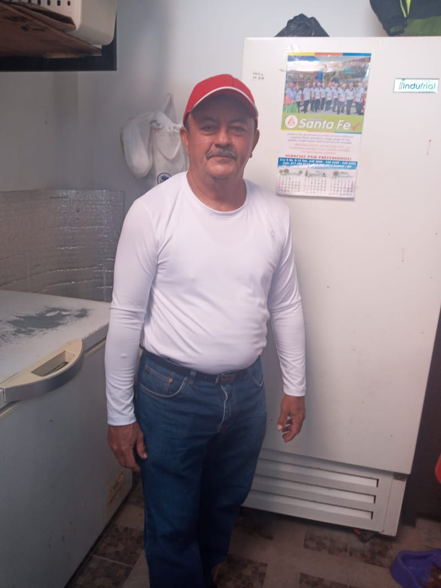

Sabores

Helados en leche

Helados en agua

Hola, somos Helados Sabrositos, una familia con un sueño y una misión: ofrecerte los mejores helados artesanales, hechos con amor y dedicación.
Una gran historia, un gran ejemplo
 Hace muchos años, en un pequeño pueblo llamado Espinal, en el corazón de Colombia, vivía un vendedor ambulante llamado Salomón Corzo. Salomón era un hombre sencillo pero lleno de sueños y ambiciones. Todos los días, cargaba su carrito con mercancía y recorría las calles, ofreciendo sus productos a los transeúntes. Un día soleado, mientras Salomón paseaba por las calles empedradas, se encontró con un anciano que vendía helados. El anciano tenía una pequeña carreta llena de deliciosos helados artesanales. Salomón se detuvo y observó cómo el anciano servía con cariño los helados a los niños que se acercaban. El negocio del anciano parecía prosperar, y Salomón sintió una chispa de inspiración.
—Señor —dijo Salomón con timidez—, ¿me permitiría vender helados
también? Veo que su negocio es exitoso, y yo tengo tiempo libre por
las mañanas. El anciano sonrió y miró a Salomón con ojos sabios. Había
visto muchas cosas en su vida y reconocía la pasión en los ojos del
joven vendedor.
—Claro, hijo —respondió el anciano—. Pero hay una
condición: debes aprender la receta secreta de mis helados. Esa es la
clave de mi éxito. Salomón aceptó con entusiasmo. Durante meses,
trabajó junto al anciano, aprendiendo los secretos de la mezcla
perfecta, la textura ideal y los sabores que hacían que los helados
fueran irresistibles. El anciano compartió con él la fórmula mágica,
transmitida de generación en generación. Finalmente, el anciano
decidió retirarse. Sin dinero de por medio, pero con un corazón lleno
de determinación, Salomón se convirtió en el dueño de la pequeña
carreta de helados. Así nació "Helados Sabrositos", como símbolo de amor y sabor.
Con el tiempo, la fama de "Helados Sabrositos" se extendió más allá de Espinal. Los niños corrían emocionados hacia la carreta de Salomón, y los adultos recordaban con nostalgia los helados de su infancia. La receta secreta seguía siendo el alma del negocio, y Salomón la protegía como un tesoro. Y así, desde aquel día soleado en Espinal, "Helados Sabrositos" se convirtió en un símbolo de dulzura y perseverancia. Salomón Corzo demostró que los sueños pueden convertirse en realidad cuando se mezclan con pasión y una pizca de magia.
Número de pedidos -> Proximamente!
Próximamente!